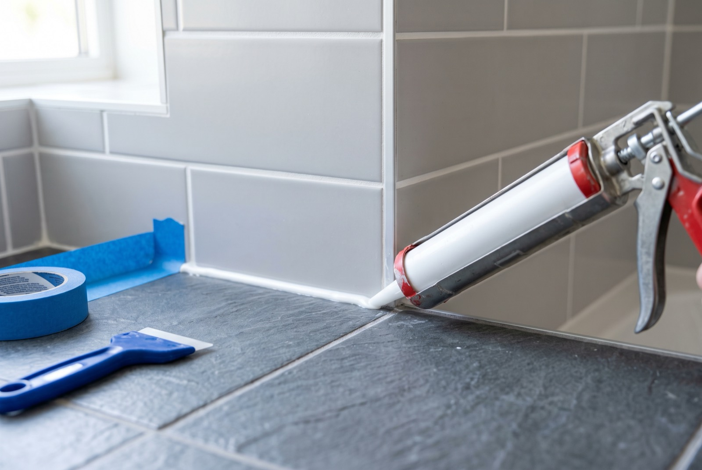

Bathroom regrouting & silicone sealant: fixing mouldy, cracked joints

Black, mouldy joints around your basin or shower? Bathroom regrouting in Singapore is a quick, affordable fix: a silicone re-seal around one fixture typically costs about S$60–150 per area, and a full bathroom regrout around S$150–400. The catch is that scrubbing and bleach only hide the problem — to replace silicone sealant or fix mouldy grout for good, the old material has to come out completely and be redone with the right product. This guide explains why joints fail so fast here, the proper tile gap repair process, what it costs, and the one warning sign that means the problem is bigger than grout.
Why grout and silicone fail so fast in Singapore
Singapore bathrooms work harder than bathrooms almost anywhere else. Humidity sits high all year, most HDB toilets have limited ventilation, and the joints never fully dry between showers. That constant dampness does three things:
- Black mould. Mould feeds on soap residue, skin oils and moisture. Grout is porous, so spores root inside it, not just on the surface — and they colonise the underside of silicone beads where no brush can reach. The National Environment Agency's guidance on indoor dampness (nea.gov.sg) is blunt about it: persistent moisture is the root cause, and mouldy porous materials are better replaced than cleaned.
- Cracking. Tiles expand and contract slightly with temperature and building movement. Rigid grout in a joint that actually moves — like where the wall meets the floor — cracks, and hairline cracks let water in behind the tiles.
- Peeling. Silicone that was applied over a damp or dirty surface, or cheap non-sanitary silicone, loses adhesion after a couple of years. Once an edge lifts, water tracks underneath and the mould party starts beneath the bead.
None of this means the original work was necessarily bad — sealant and grout are wear items in this climate. They are meant to be renewed every several years, the same way you'd re-paint.
Grout vs silicone: where each belongs
Half the failed joints we see come down to the wrong material in the wrong place. The rule is simple:
- Grout — rigid, cement-based — belongs in the gaps between tiles on flat runs of wall and floor. It's structural filler, not a flexible seal.
- Silicone sealant — flexible and waterproof — belongs at every junction that moves or must stay watertight: wall-to-floor corners, around the basin and tap base, along bathtub and shower-screen edges, and where the kitchen top meets the wall.
Grout squeezed into a corner joint will crack within months because corners flex. Silicone smeared over tile gaps looks tidy for a week, then peels and traps grime. A proper tile gap repair uses both, each in its place.
The proper process (and why shortcuts fail)
Replacing silicone sealant
- Cut out the old bead completely. Blade out every trace of the old silicone, including the thin film left on the tile. New silicone will not bond to old silicone — this is the step DIY jobs and rushed contractors skip.
- Clean and kill residual mould on the exposed joint, then let it dry fully. Sealing moisture in guarantees the mould returns under the new bead.
- Apply anti-mould (sanitary-grade) silicone in one continuous bead, tooled smooth so water sheds off instead of pooling on it. Leave it to cure — usually 24 hours before the shower is used.
Regrouting tile joints
- Rake out the old grout to a few millimetres deep with a grout saw or oscillating tool — not just scrape the surface.
- Vacuum and clean the joints, then regrout with a mould-resistant grout, pressed in fully so there are no voids.
- Seal or finish as needed, and renew the silicone at all the movement joints at the same time — doing one without the other is a half job.
Why bleach is only ever temporary
Bleach and supermarket mould sprays whiten what you can see. They don't reach the mould rooted deep inside porous grout, and they can't touch the colony living under a lifted silicone bead. That's why the black staining comes back within weeks, no matter how hard you scrub. Repeated bleaching also degrades silicone, making it brittle and speeding up the peeling. Use it as a stop-gap before guests arrive, sure — but the lasting mouldy grout fix is removal and replacement.
When regrouting is enough — and when it isn't
Regrouting and resealing solve surface problems: cosmetic mould, cracked joints, water seeping through gaps into the wall edge. But grout was never your waterproofing — that's the membrane under the tiles. Warning signs the membrane itself has failed:
- Water stains or peeling paint on the ceiling of the unit below (often how HDB owners find out)
- Tiles that sound hollow, lift, or stay damp long after the bathroom dries
- Dampness on the other side of the bathroom wall — in the bedroom or hallway
If any of these are present, regrouting alone is money spent on a symptom. Read our guide to HDB bathroom waterproofing for what a proper membrane repair involves. And if the bathroom is old enough that waterproofing has gone, it may be worth comparing against a fuller refresh — see our HDB toilet renovation cost guide.
What regrouting and resealing cost in Singapore (2026)
Pricing is by job, and a minimum trip charge usually applies. Indicative 2026 ranges:
| Job | Typical price (SGD) | Notes |
|---|---|---|
| Silicone re-seal — basin, bathtub or kitchen top | $60 – $150 per area | Cut out old bead, anti-mould silicone |
| Full bathroom regrout | $150 – $400 | Depends on size and grout condition |
| Combined with other handyman jobs | Package quote | One visit spreads the trip charge |
Prices are indicative, not a quotation. The easy saving: bundle the regrout with other small jobs — a leaking tap, a loose toilet seat, shower head replacement — so one trip charge covers everything. See our full handyman services list for what can ride along.
How long does it last?
Done properly — old material fully removed, joint dry, sanitary-grade products — expect a regrout to last 8–10 years or more and an anti-mould silicone re-seal around 3–5 years before it wants refreshing. Ventilation is the multiplier: running the exhaust fan or opening the window for 20–30 minutes after showers keeps joints dry and can double the mould-free life of the work.
Getting it done by RK E&C
RK E&C is a Singapore-registered renovation and handyman company (UEN 202442767D). We regrout and reseal bathrooms and kitchens in HDB flats and condos island-wide — cutting out the old material fully, drying the joints, and finishing with anti-mould products, as a standalone visit or bundled with other handyman jobs. WhatsApp us a photo of the mouldy joints and your postal code, and we'll send a fixed quote — usually the same day.
Frequently asked questions
How much does bathroom regrouting cost in Singapore?
A silicone re-seal around a basin, bathtub or kitchen top typically runs about S$60–150 per area; a full bathroom regrout is usually S$150–400 depending on size and condition. Prices are indicative — bundling with other handyman jobs in one visit lowers the effective cost.
Why does my bathroom silicone keep turning black?
Year-round humidity means the joints never fully dry, and mould feeds on soap residue and moisture trapped on and under the bead. Once mould has rooted inside the silicone, cleaning can't remove it — the bead must be cut out and replaced with anti-mould silicone.
Can I just bleach mouldy grout instead of regrouting?
Bleach whitens the surface but can't reach mould rooted deep in porous grout or under lifted silicone, so the staining returns within weeks. It's a stop-gap; the lasting fix is raking out and redoing the joint.
What is the difference between grout and silicone sealant?
Grout is rigid cement filler for the gaps between tiles on flat runs. Silicone is a flexible waterproof seal for junctions that move — wall-to-floor corners, around basins, bathtubs, shower screens and kitchen tops. Grout in a movement joint cracks; silicone over tile gaps peels.
Will regrouting stop a leak into the flat below?
Only if water was escaping through failed joints alone. Ceiling stains below, hollow-sounding tiles or persistent dampness usually mean the waterproofing membrane under the tiles has failed — see our bathroom waterproofing guide for that repair.
How long does new grout and silicone last?
A proper regrout lasts 8–10 years or more; a quality anti-mould silicone re-seal about 3–5 years in a Singapore bathroom. Ventilating after showers meaningfully extends both.
Mouldy joints staring back at you?
Send us a photo of the grout or silicone and your postal code. Fixed-price quote, anti-mould products, island-wide.
Prices are indicative of the Singapore market in 2026 and not a quotation. Confirm a fixed price with your provider before work begins.